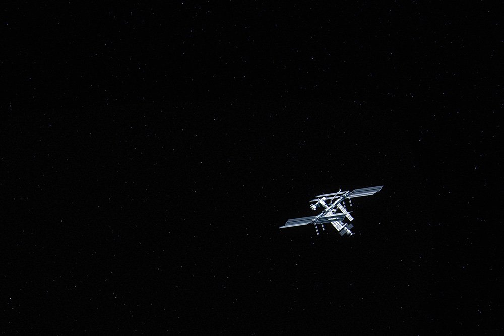

The International Space Station (ISS) is a modular space station (habitable artificial satellite) in low Earth orbit. It is a multinational collaborative project between five participating space agencies: NASA (United States), Roscosmos (Russia), JAXA (Japan), ESA (Europe), and CSA (Canada).The ownership and use of the space station is established by intergovernmental treaties and agreements.
The station serves as a microgravity and space environment research laboratory in which scientific experiments are conducted in astrobiology, astronomy, meteorology, physics, and other fields. The ISS is suited for testing the spacecraft systems and equipment required for possible future long-duration missions to the Moon and Mars.
Fully crewed: 6
Launch: 20 November 1998
Mass: 419,725 kg (925,335 lb)
Length: 73.0 m (239.4 ft)
Width: 109.0 m (357.5 ft)
Press one of the dates to the left to see what happened on that date.
January 25, 1984
President Ronald Reagan's State of the Union Address directs NASA to build an international space station within the next 10 years.
President Ronald Reagan.
November 20, 1998
The first segment of the ISS launches: a Russian proton rocket named Zarya ("sunrise").
December 4, 1998
Unity, the first U.S.-built component of the International Space Station launches—the first Space Shuttle mission dedicated to assembly of the station. unity.
November 2, 2000
Astronaut Bill Shepherd and cosmonauts Yuri Gidzenko and Sergei Krikalev become the first crew to reside onboard the station, staying several months.
February 7, 2001
Destiny, the U.S. Laboratory module, becomes part of the station. Destiny continues to be the primary research laboratory for U.S. payloads.
2005
Congress designates the U.S. portion of the ISS as the nation's newest national laboratory to maximize its use for other U.S. government agencies and for academic and private institutions.
February 7, 2008
The European Space Agency’s Columbus Laboratory becomes part of the station.
March 11, 2008
The first Japanese Kibo laboratory module becomes part of the station.
November 2, 2010
The ISS celebrates its 10-year anniversary of continuous human occupation. Since Expedition 1 in the fall of 2000, 202 people had visited the station.
The International Space Station in space.
February 14, 2011
NASA issues a cooperative agreement notice for a management partner.
July 13, 2011
NASA selects the Center for the Advancement of Science in Space to manage the ISS National Lab.
2013
Proteins can be grown as crystals in space with nearly perfect three-dimensional structures useful for the development of new drugs. The ISS National Lab's protein crystal growth (PCG) series of flights began in 2013, allowing researchers to utilize the unique environment of the ISS.